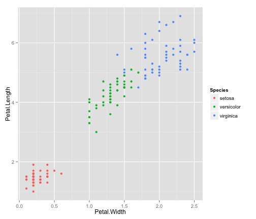
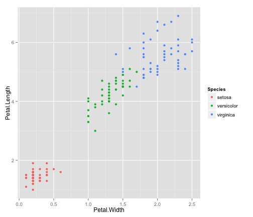
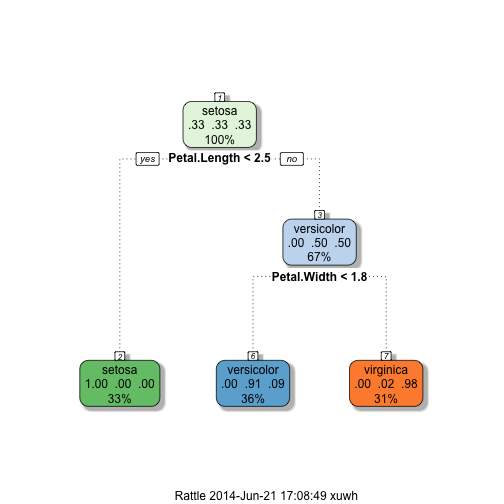

data(iris)
qplot(Petal.Length, Petal.Width, col = Species, data = iris) + aes(x = Petal.Width,
y = Petal.Length, col = Species)

Xu Wenhao
Data Science Course Student
data(iris)
qplot(Petal.Length, Petal.Width, col = Species, data = iris) + aes(x = Petal.Width,
y = Petal.Length, col = Species)

library(caret)
library(rattle)
modelFit <- train(Species ~ ., method = "rpart", data = iris)
fancyRpartPlot(modelFit$finalModel)

Use Shiny to create web app to do prediction realtime